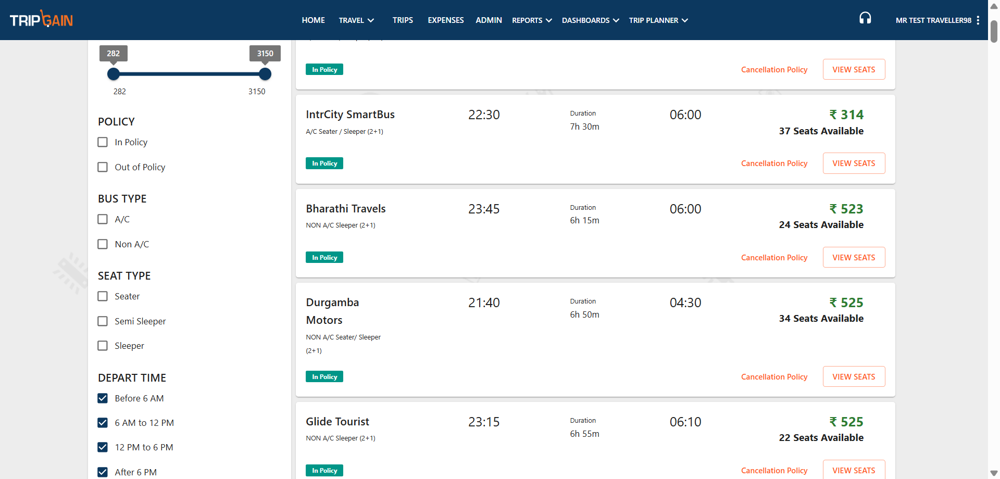

-
TCB_01_VerifySearchFunctionalityForBusForTwoDays_1
11:50:16 am / 00:00:29:771 Fail
TCB_01_VerifySearchFunctionalityForBusForTwoDays_1
07.21.2025 11:50:16 am 07.21.2025 11:50:46 am 00:00:29:771 · #test-id=1Status Timestamp Details Info 11:50:16 am Execution Started Successfully Info 11:50:18 am Bus boarding city search : 0 Info 11:50:18 am Bus droping city search : 0 Info 11:50:18 am Bus boarding date: 23 and MonthAndYear: July 2025 Pass 11:50:27 am Home page is getting displayed successfully. Pass 11:50:38 am Clicked on search bus button successfully. Pass 11:50:43 am Result page is getting displayed successfully. Info 11:50:45 am 🔍 Validating filter: "Before 6 AM" (Expected range: 0 - 359 mins) Fail 11:50:45 am ❌ 23:25 is outside range for "Before 6 AM" (Expected: 0 - 359) Fail 11:50:45 am ❌ 22:30 is outside range for "Before 6 AM" (Expected: 0 - 359) Fail 11:50:45 am ❌ 23:45 is outside range for "Before 6 AM" (Expected: 0 - 359) Fail 11:50:45 am ❌ 21:40 is outside range for "Before 6 AM" (Expected: 0 - 359) Fail 11:50:45 am ❌ 23:15 is outside range for "Before 6 AM" (Expected: 0 - 359) Fail 11:50:45 am ❌ 21:40 is outside range for "Before 6 AM" (Expected: 0 - 359) Fail 11:50:45 am ❌ 23:39 is outside range for "Before 6 AM" (Expected: 0 - 359) Fail 11:50:45 am ❌ 22:46 is outside range for "Before 6 AM" (Expected: 0 - 359) Fail 11:50:45 am ❌ 23:31 is outside range for "Before 6 AM" (Expected: 0 - 359) Fail 11:50:45 am ❌ 22:10 is outside range for "Before 6 AM" (Expected: 0 - 359) Fail 11:50:45 am ❌ 21:45 is outside range for "Before 6 AM" (Expected: 0 - 359) Fail 11:50:45 am ❌ 23:11 is outside range for "Before 6 AM" (Expected: 0 - 359) Fail 11:50:45 am ❌ 22:10 is outside range for "Before 6 AM" (Expected: 0 - 359) Fail 11:50:45 am ❌ 22:07 is outside range for "Before 6 AM" (Expected: 0 - 359) Fail 11:50:45 am ❌ 21:15 is outside range for "Before 6 AM" (Expected: 0 - 359) Fail 11:50:45 am ❌ 22:15 is outside range for "Before 6 AM" (Expected: 0 - 359) Fail 11:50:45 am ❌ 23:15 is outside range for "Before 6 AM" (Expected: 0 - 359) Fail 11:50:45 am ❌ 21:45 is outside range for "Before 6 AM" (Expected: 0 - 359) Fail 11:50:45 am ❌ 22:26 is outside range for "Before 6 AM" (Expected: 0 - 359) Fail 11:50:45 am ❌ 21:45 is outside range for "Before 6 AM" (Expected: 0 - 359) Fail 11:50:45 am ❌ 22:15 is outside range for "Before 6 AM" (Expected: 0 - 359) Fail 11:50:45 am ❌ 22:20 is outside range for "Before 6 AM" (Expected: 0 - 359) Fail 11:50:45 am ❌ 22:30 is outside range for "Before 6 AM" (Expected: 0 - 359) Fail 11:50:45 am ❌ 22:17 is outside range for "Before 6 AM" (Expected: 0 - 359) Fail 11:50:45 am ❌ 22:20 is outside range for "Before 6 AM" (Expected: 0 - 359) Fail 11:50:45 am ❌ 22:10 is outside range for "Before 6 AM" (Expected: 0 - 359) Fail 11:50:45 am ❌ 21:57 is outside range for "Before 6 AM" (Expected: 0 - 359) Fail 11:50:45 am ❌ 22:35 is outside range for "Before 6 AM" (Expected: 0 - 359) Fail 11:50:45 am ❌ 19:30 is outside range for "Before 6 AM" (Expected: 0 - 359) Fail 11:50:45 am ❌ 22:32 is outside range for "Before 6 AM" (Expected: 0 - 359) Fail 11:50:45 am ❌ 21:45 is outside range for "Before 6 AM" (Expected: 0 - 359) Fail 11:50:45 am ❌ 22:30 is outside range for "Before 6 AM" (Expected: 0 - 359) Fail 11:50:45 am ❌ 19:15 is outside range for "Before 6 AM" (Expected: 0 - 359) Fail 11:50:45 am ❌ 21:55 is outside range for "Before 6 AM" (Expected: 0 - 359) Fail 11:50:45 am ❌ 22:25 is outside range for "Before 6 AM" (Expected: 0 - 359) Fail 11:50:45 am ❌ 22:40 is outside range for "Before 6 AM" (Expected: 0 - 359) Fail 11:50:45 am ❌ 22:30 is outside range for "Before 6 AM" (Expected: 0 - 359) Fail 11:50:45 am ❌ 22:15 is outside range for "Before 6 AM" (Expected: 0 - 359) Fail 11:50:45 am ❌ 23:15 is outside range for "Before 6 AM" (Expected: 0 - 359) Fail 11:50:45 am ❌ 22:30 is outside range for "Before 6 AM" (Expected: 0 - 359) Fail 11:50:45 am ❌ 21:49 is outside range for "Before 6 AM" (Expected: 0 - 359) Fail 11:50:45 am ❌ 23:10 is outside range for "Before 6 AM" (Expected: 0 - 359) Fail 11:50:45 am ❌ 23:30 is outside range for "Before 6 AM" (Expected: 0 - 359) Fail 11:50:45 am ❌ 19:30 is outside range for "Before 6 AM" (Expected: 0 - 359) Fail 11:50:45 am ❌ 19:52 is outside range for "Before 6 AM" (Expected: 0 - 359) Fail 11:50:45 am ❌ 21:40 is outside range for "Before 6 AM" (Expected: 0 - 359) Fail 11:50:45 am ❌ 23:07 is outside range for "Before 6 AM" (Expected: 0 - 359) Fail 11:50:45 am ❌ 22:40 is outside range for "Before 6 AM" (Expected: 0 - 359) Fail 11:50:45 am ❌ 23:25 is outside range for "Before 6 AM" (Expected: 0 - 359) Fail 11:50:45 am ❌ 22:55 is outside range for "Before 6 AM" (Expected: 0 - 359) Fail 11:50:45 am ❌ 22:45 is outside range for "Before 6 AM" (Expected: 0 - 359) Fail 11:50:45 am ❌ 22:40 is outside range for "Before 6 AM" (Expected: 0 - 359) Fail 11:50:45 am ❌ 22:30 is outside range for "Before 6 AM" (Expected: 0 - 359) Fail 11:50:45 am ❌ 23:30 is outside range for "Before 6 AM" (Expected: 0 - 359) Fail 11:50:45 am ❌ 23:00 is outside range for "Before 6 AM" (Expected: 0 - 359) Fail 11:50:45 am ❌ 22:40 is outside range for "Before 6 AM" (Expected: 0 - 359) Fail 11:50:45 am ❌ 22:25 is outside range for "Before 6 AM" (Expected: 0 - 359) Fail 11:50:45 am ❌ 22:20 is outside range for "Before 6 AM" (Expected: 0 - 359) Fail 11:50:45 am ❌ 23:00 is outside range for "Before 6 AM" (Expected: 0 - 359) Fail 11:50:45 am ❌ 21:20 is outside range for "Before 6 AM" (Expected: 0 - 359) Fail 11:50:45 am ❌ 21:55 is outside range for "Before 6 AM" (Expected: 0 - 359) Fail 11:50:45 am ❌ 23:15 is outside range for "Before 6 AM" (Expected: 0 - 359) Fail 11:50:45 am ❌ 22:15 is outside range for "Before 6 AM" (Expected: 0 - 359) Fail 11:50:45 am ❌ 22:25 is outside range for "Before 6 AM" (Expected: 0 - 359) Fail 11:50:45 am ❌ 22:40 is outside range for "Before 6 AM" (Expected: 0 - 359) Fail 11:50:45 am ❌ 22:55 is outside range for "Before 6 AM" (Expected: 0 - 359) Fail 11:50:45 am ❌ 23:10 is outside range for "Before 6 AM" (Expected: 0 - 359) Fail 11:50:45 am ❌ 20:45 is outside range for "Before 6 AM" (Expected: 0 - 359) Fail 11:50:45 am ❌ 23:22 is outside range for "Before 6 AM" (Expected: 0 - 359) Fail 11:50:45 am ❌ 22:30 is outside range for "Before 6 AM" (Expected: 0 - 359) Fail 11:50:45 am ❌ 21:20 is outside range for "Before 6 AM" (Expected: 0 - 359) Fail 11:50:45 am ❌ 23:25 is outside range for "Before 6 AM" (Expected: 0 - 359) Fail 11:50:45 am ❌ 22:35 is outside range for "Before 6 AM" (Expected: 0 - 359) Fail 11:50:45 am ❌ 22:40 is outside range for "Before 6 AM" (Expected: 0 - 359) Fail 11:50:45 am ❌ 23:45 is outside range for "Before 6 AM" (Expected: 0 - 359) Fail 11:50:45 am ❌ 22:45 is outside range for "Before 6 AM" (Expected: 0 - 359) Fail 11:50:45 am ❌ 23:50 is outside range for "Before 6 AM" (Expected: 0 - 359) Fail 11:50:45 am ❌ 21:45 is outside range for "Before 6 AM" (Expected: 0 - 359) Fail 11:50:45 am ❌ 22:45 is outside range for "Before 6 AM" (Expected: 0 - 359) Fail 11:50:45 am ❌ 22:50 is outside range for "Before 6 AM" (Expected: 0 - 359) Fail 11:50:45 am ❌ 22:25 is outside range for "Before 6 AM" (Expected: 0 - 359) Fail 11:50:45 am ❌ 22:00 is outside range for "Before 6 AM" (Expected: 0 - 359) Fail 11:50:45 am ❌ 22:15 is outside range for "Before 6 AM" (Expected: 0 - 359) Fail 11:50:45 am ❌ 22:45 is outside range for "Before 6 AM" (Expected: 0 - 359) Fail 11:50:45 am ❌ 22:45 is outside range for "Before 6 AM" (Expected: 0 - 359) Fail 11:50:45 am ❌ 22:15 is outside range for "Before 6 AM" (Expected: 0 - 359) Fail 11:50:45 am ❌ 22:00 is outside range for "Before 6 AM" (Expected: 0 - 359) Fail 11:50:45 am ❌ 22:15 is outside range for "Before 6 AM" (Expected: 0 - 359) Fail 11:50:45 am ❌ 22:50 is outside range for "Before 6 AM" (Expected: 0 - 359) Fail 11:50:45 am ❌ 22:40 is outside range for "Before 6 AM" (Expected: 0 - 359) Fail 11:50:45 am ❌ 22:20 is outside range for "Before 6 AM" (Expected: 0 - 359) Fail 11:50:45 am ❌ 21:50 is outside range for "Before 6 AM" (Expected: 0 - 359) Fail 11:50:45 am ❌ 23:00 is outside range for "Before 6 AM" (Expected: 0 - 359) Fail 11:50:45 am ❌ 23:13 is outside range for "Before 6 AM" (Expected: 0 - 359) Fail 11:50:45 am ❌ 22:30 is outside range for "Before 6 AM" (Expected: 0 - 359) Fail 11:50:45 am ❌ 20:00 is outside range for "Before 6 AM" (Expected: 0 - 359) Fail 11:50:45 am ❌ 20:00 is outside range for "Before 6 AM" (Expected: 0 - 359) Info 11:50:46 am Screenshot captured Info 11:50:46 am 🔍 Validating filter: "6 AM to 12 PM" (Expected range: 360 - 720 mins) Fail 11:50:46 am ❌ 23:25 is outside range for "6 AM to 12 PM" (Expected: 360 - 720) Fail 11:50:46 am ❌ 22:30 is outside range for "6 AM to 12 PM" (Expected: 360 - 720) Fail 11:50:46 am ❌ 23:45 is outside range for "6 AM to 12 PM" (Expected: 360 - 720) Fail 11:50:46 am ❌ 21:40 is outside range for "6 AM to 12 PM" (Expected: 360 - 720) Fail 11:50:46 am ❌ 23:15 is outside range for "6 AM to 12 PM" (Expected: 360 - 720) Fail 11:50:46 am ❌ 21:40 is outside range for "6 AM to 12 PM" (Expected: 360 - 720) Fail 11:50:46 am ❌ 23:39 is outside range for "6 AM to 12 PM" (Expected: 360 - 720) Fail 11:50:46 am ❌ 22:46 is outside range for "6 AM to 12 PM" (Expected: 360 - 720) Fail 11:50:46 am ❌ 23:31 is outside range for "6 AM to 12 PM" (Expected: 360 - 720) Fail 11:50:46 am ❌ 22:10 is outside range for "6 AM to 12 PM" (Expected: 360 - 720) Fail 11:50:46 am ❌ 21:45 is outside range for "6 AM to 12 PM" (Expected: 360 - 720) Fail 11:50:46 am ❌ 23:11 is outside range for "6 AM to 12 PM" (Expected: 360 - 720) Fail 11:50:46 am ❌ 22:10 is outside range for "6 AM to 12 PM" (Expected: 360 - 720) Fail 11:50:46 am ❌ 22:07 is outside range for "6 AM to 12 PM" (Expected: 360 - 720) Fail 11:50:46 am ❌ 21:15 is outside range for "6 AM to 12 PM" (Expected: 360 - 720) Fail 11:50:46 am ❌ 22:15 is outside range for "6 AM to 12 PM" (Expected: 360 - 720) Fail 11:50:46 am ❌ 23:15 is outside range for "6 AM to 12 PM" (Expected: 360 - 720) Fail 11:50:46 am ❌ 21:45 is outside range for "6 AM to 12 PM" (Expected: 360 - 720) Fail 11:50:46 am ❌ 22:26 is outside range for "6 AM to 12 PM" (Expected: 360 - 720) Fail 11:50:46 am ❌ 21:45 is outside range for "6 AM to 12 PM" (Expected: 360 - 720) Fail 11:50:46 am ❌ 22:15 is outside range for "6 AM to 12 PM" (Expected: 360 - 720) Fail 11:50:46 am ❌ 22:20 is outside range for "6 AM to 12 PM" (Expected: 360 - 720) Fail 11:50:46 am ❌ 22:30 is outside range for "6 AM to 12 PM" (Expected: 360 - 720) Fail 11:50:46 am ❌ 22:17 is outside range for "6 AM to 12 PM" (Expected: 360 - 720) Fail 11:50:46 am ❌ 22:20 is outside range for "6 AM to 12 PM" (Expected: 360 - 720) Fail 11:50:46 am ❌ 22:10 is outside range for "6 AM to 12 PM" (Expected: 360 - 720) Fail 11:50:46 am ❌ 21:57 is outside range for "6 AM to 12 PM" (Expected: 360 - 720) Fail 11:50:46 am ❌ 22:35 is outside range for "6 AM to 12 PM" (Expected: 360 - 720) Fail 11:50:46 am ❌ 19:30 is outside range for "6 AM to 12 PM" (Expected: 360 - 720) Fail 11:50:46 am ❌ 22:32 is outside range for "6 AM to 12 PM" (Expected: 360 - 720) Fail 11:50:46 am ❌ 21:45 is outside range for "6 AM to 12 PM" (Expected: 360 - 720) Fail 11:50:46 am ❌ 22:30 is outside range for "6 AM to 12 PM" (Expected: 360 - 720) Fail 11:50:46 am ❌ 19:15 is outside range for "6 AM to 12 PM" (Expected: 360 - 720) Fail 11:50:46 am ❌ 21:55 is outside range for "6 AM to 12 PM" (Expected: 360 - 720) Fail 11:50:46 am ❌ 22:25 is outside range for "6 AM to 12 PM" (Expected: 360 - 720) Fail 11:50:46 am ❌ 22:40 is outside range for "6 AM to 12 PM" (Expected: 360 - 720) Fail 11:50:46 am ❌ 22:30 is outside range for "6 AM to 12 PM" (Expected: 360 - 720) Fail 11:50:46 am ❌ 22:15 is outside range for "6 AM to 12 PM" (Expected: 360 - 720) Fail 11:50:46 am ❌ 23:15 is outside range for "6 AM to 12 PM" (Expected: 360 - 720) Fail 11:50:46 am ❌ 22:30 is outside range for "6 AM to 12 PM" (Expected: 360 - 720) Fail 11:50:46 am ❌ 21:49 is outside range for "6 AM to 12 PM" (Expected: 360 - 720) Fail 11:50:46 am ❌ 23:10 is outside range for "6 AM to 12 PM" (Expected: 360 - 720) Fail 11:50:46 am ❌ 23:30 is outside range for "6 AM to 12 PM" (Expected: 360 - 720) Fail 11:50:46 am ❌ 19:30 is outside range for "6 AM to 12 PM" (Expected: 360 - 720) Fail 11:50:46 am ❌ 19:52 is outside range for "6 AM to 12 PM" (Expected: 360 - 720) Fail 11:50:46 am ❌ 21:40 is outside range for "6 AM to 12 PM" (Expected: 360 - 720) Fail 11:50:46 am ❌ 23:07 is outside range for "6 AM to 12 PM" (Expected: 360 - 720) Fail 11:50:46 am ❌ 22:40 is outside range for "6 AM to 12 PM" (Expected: 360 - 720) Fail 11:50:46 am ❌ 23:25 is outside range for "6 AM to 12 PM" (Expected: 360 - 720) Fail 11:50:46 am ❌ 22:55 is outside range for "6 AM to 12 PM" (Expected: 360 - 720) Fail 11:50:46 am ❌ 22:45 is outside range for "6 AM to 12 PM" (Expected: 360 - 720) Fail 11:50:46 am ❌ 22:40 is outside range for "6 AM to 12 PM" (Expected: 360 - 720) Fail 11:50:46 am ❌ 22:30 is outside range for "6 AM to 12 PM" (Expected: 360 - 720) Fail 11:50:46 am ❌ 23:30 is outside range for "6 AM to 12 PM" (Expected: 360 - 720) Fail 11:50:46 am ❌ 23:00 is outside range for "6 AM to 12 PM" (Expected: 360 - 720) Fail 11:50:46 am ❌ 22:40 is outside range for "6 AM to 12 PM" (Expected: 360 - 720) Fail 11:50:46 am ❌ 22:25 is outside range for "6 AM to 12 PM" (Expected: 360 - 720) Fail 11:50:46 am ❌ 22:20 is outside range for "6 AM to 12 PM" (Expected: 360 - 720) Fail 11:50:46 am ❌ 23:00 is outside range for "6 AM to 12 PM" (Expected: 360 - 720) Fail 11:50:46 am ❌ 21:20 is outside range for "6 AM to 12 PM" (Expected: 360 - 720) Fail 11:50:46 am ❌ 21:55 is outside range for "6 AM to 12 PM" (Expected: 360 - 720) Fail 11:50:46 am ❌ 23:15 is outside range for "6 AM to 12 PM" (Expected: 360 - 720) Fail 11:50:46 am ❌ 22:15 is outside range for "6 AM to 12 PM" (Expected: 360 - 720) Fail 11:50:46 am ❌ 22:25 is outside range for "6 AM to 12 PM" (Expected: 360 - 720) Fail 11:50:46 am ❌ 22:40 is outside range for "6 AM to 12 PM" (Expected: 360 - 720) Fail 11:50:46 am ❌ 22:55 is outside range for "6 AM to 12 PM" (Expected: 360 - 720) Fail 11:50:46 am ❌ 23:10 is outside range for "6 AM to 12 PM" (Expected: 360 - 720) Fail 11:50:46 am ❌ 20:45 is outside range for "6 AM to 12 PM" (Expected: 360 - 720) Fail 11:50:46 am ❌ 23:22 is outside range for "6 AM to 12 PM" (Expected: 360 - 720) Fail 11:50:46 am ❌ 22:30 is outside range for "6 AM to 12 PM" (Expected: 360 - 720) Fail 11:50:46 am ❌ 21:20 is outside range for "6 AM to 12 PM" (Expected: 360 - 720) Fail 11:50:46 am ❌ 23:25 is outside range for "6 AM to 12 PM" (Expected: 360 - 720) Fail 11:50:46 am ❌ 22:35 is outside range for "6 AM to 12 PM" (Expected: 360 - 720) Fail 11:50:46 am ❌ 22:40 is outside range for "6 AM to 12 PM" (Expected: 360 - 720) Fail 11:50:46 am ❌ 23:45 is outside range for "6 AM to 12 PM" (Expected: 360 - 720) Fail 11:50:46 am ❌ 22:45 is outside range for "6 AM to 12 PM" (Expected: 360 - 720) Fail 11:50:46 am ❌ 23:50 is outside range for "6 AM to 12 PM" (Expected: 360 - 720) Fail 11:50:46 am ❌ 21:45 is outside range for "6 AM to 12 PM" (Expected: 360 - 720) Fail 11:50:46 am ❌ 22:45 is outside range for "6 AM to 12 PM" (Expected: 360 - 720) Fail 11:50:46 am ❌ 22:50 is outside range for "6 AM to 12 PM" (Expected: 360 - 720) Fail 11:50:46 am ❌ 22:25 is outside range for "6 AM to 12 PM" (Expected: 360 - 720) Fail 11:50:46 am ❌ 22:00 is outside range for "6 AM to 12 PM" (Expected: 360 - 720) Fail 11:50:46 am ❌ 22:15 is outside range for "6 AM to 12 PM" (Expected: 360 - 720) Fail 11:50:46 am ❌ 22:45 is outside range for "6 AM to 12 PM" (Expected: 360 - 720) Fail 11:50:46 am ❌ 22:45 is outside range for "6 AM to 12 PM" (Expected: 360 - 720) Fail 11:50:46 am ❌ 22:15 is outside range for "6 AM to 12 PM" (Expected: 360 - 720) Fail 11:50:46 am ❌ 22:00 is outside range for "6 AM to 12 PM" (Expected: 360 - 720) Fail 11:50:46 am ❌ 22:15 is outside range for "6 AM to 12 PM" (Expected: 360 - 720) Fail 11:50:46 am ❌ 22:50 is outside range for "6 AM to 12 PM" (Expected: 360 - 720) Fail 11:50:46 am ❌ 22:40 is outside range for "6 AM to 12 PM" (Expected: 360 - 720) Fail 11:50:46 am ❌ 22:20 is outside range for "6 AM to 12 PM" (Expected: 360 - 720) Fail 11:50:46 am ❌ 21:50 is outside range for "6 AM to 12 PM" (Expected: 360 - 720) Fail 11:50:46 am ❌ 23:00 is outside range for "6 AM to 12 PM" (Expected: 360 - 720) Fail 11:50:46 am ❌ 23:13 is outside range for "6 AM to 12 PM" (Expected: 360 - 720) Fail 11:50:46 am ❌ 22:30 is outside range for "6 AM to 12 PM" (Expected: 360 - 720) Fail 11:50:46 am ❌ 20:00 is outside range for "6 AM to 12 PM" (Expected: 360 - 720) Fail 11:50:46 am ❌ 20:00 is outside range for "6 AM to 12 PM" (Expected: 360 - 720) Info 11:50:46 am Screenshot captured 
Info 11:50:46 am 🔍 Validating filter: "12 PM to 6 PM" (Expected range: 720 - 1080 mins) Fail 11:50:46 am ❌ 23:25 is outside range for "12 PM to 6 PM" (Expected: 720 - 1080) Fail 11:50:46 am ❌ 22:30 is outside range for "12 PM to 6 PM" (Expected: 720 - 1080) Fail 11:50:46 am ❌ 23:45 is outside range for "12 PM to 6 PM" (Expected: 720 - 1080) Fail 11:50:46 am ❌ 21:40 is outside range for "12 PM to 6 PM" (Expected: 720 - 1080) Fail 11:50:46 am ❌ 23:15 is outside range for "12 PM to 6 PM" (Expected: 720 - 1080) Fail 11:50:46 am ❌ 21:40 is outside range for "12 PM to 6 PM" (Expected: 720 - 1080) Fail 11:50:46 am ❌ 23:39 is outside range for "12 PM to 6 PM" (Expected: 720 - 1080) Fail 11:50:46 am ❌ 22:46 is outside range for "12 PM to 6 PM" (Expected: 720 - 1080) Fail 11:50:46 am ❌ 23:31 is outside range for "12 PM to 6 PM" (Expected: 720 - 1080) Fail 11:50:46 am ❌ 22:10 is outside range for "12 PM to 6 PM" (Expected: 720 - 1080) Fail 11:50:46 am ❌ 21:45 is outside range for "12 PM to 6 PM" (Expected: 720 - 1080) Fail 11:50:46 am ❌ 23:11 is outside range for "12 PM to 6 PM" (Expected: 720 - 1080) Fail 11:50:46 am ❌ 22:10 is outside range for "12 PM to 6 PM" (Expected: 720 - 1080) Fail 11:50:46 am ❌ 22:07 is outside range for "12 PM to 6 PM" (Expected: 720 - 1080) Fail 11:50:46 am ❌ 21:15 is outside range for "12 PM to 6 PM" (Expected: 720 - 1080) Fail 11:50:46 am ❌ 22:15 is outside range for "12 PM to 6 PM" (Expected: 720 - 1080) Fail 11:50:46 am ❌ 23:15 is outside range for "12 PM to 6 PM" (Expected: 720 - 1080) Fail 11:50:46 am ❌ 21:45 is outside range for "12 PM to 6 PM" (Expected: 720 - 1080) Fail 11:50:46 am ❌ 22:26 is outside range for "12 PM to 6 PM" (Expected: 720 - 1080) Fail 11:50:46 am ❌ 21:45 is outside range for "12 PM to 6 PM" (Expected: 720 - 1080) Fail 11:50:46 am ❌ 22:15 is outside range for "12 PM to 6 PM" (Expected: 720 - 1080) Fail 11:50:46 am ❌ 22:20 is outside range for "12 PM to 6 PM" (Expected: 720 - 1080) Fail 11:50:46 am ❌ 22:30 is outside range for "12 PM to 6 PM" (Expected: 720 - 1080) Fail 11:50:46 am ❌ 22:17 is outside range for "12 PM to 6 PM" (Expected: 720 - 1080) Fail 11:50:46 am ❌ 22:20 is outside range for "12 PM to 6 PM" (Expected: 720 - 1080) Fail 11:50:46 am ❌ 22:10 is outside range for "12 PM to 6 PM" (Expected: 720 - 1080) Fail 11:50:46 am ❌ 21:57 is outside range for "12 PM to 6 PM" (Expected: 720 - 1080) Fail 11:50:46 am ❌ 22:35 is outside range for "12 PM to 6 PM" (Expected: 720 - 1080) Fail 11:50:46 am ❌ 19:30 is outside range for "12 PM to 6 PM" (Expected: 720 - 1080) Fail 11:50:46 am ❌ 22:32 is outside range for "12 PM to 6 PM" (Expected: 720 - 1080) Fail 11:50:46 am ❌ 21:45 is outside range for "12 PM to 6 PM" (Expected: 720 - 1080) Fail 11:50:46 am ❌ 22:30 is outside range for "12 PM to 6 PM" (Expected: 720 - 1080) Fail 11:50:46 am ❌ 19:15 is outside range for "12 PM to 6 PM" (Expected: 720 - 1080) Fail 11:50:46 am ❌ 21:55 is outside range for "12 PM to 6 PM" (Expected: 720 - 1080) Fail 11:50:46 am ❌ 22:25 is outside range for "12 PM to 6 PM" (Expected: 720 - 1080) Fail 11:50:46 am ❌ 22:40 is outside range for "12 PM to 6 PM" (Expected: 720 - 1080) Fail 11:50:46 am ❌ 22:30 is outside range for "12 PM to 6 PM" (Expected: 720 - 1080) Fail 11:50:46 am ❌ 22:15 is outside range for "12 PM to 6 PM" (Expected: 720 - 1080) Fail 11:50:46 am ❌ 23:15 is outside range for "12 PM to 6 PM" (Expected: 720 - 1080) Fail 11:50:46 am ❌ 22:30 is outside range for "12 PM to 6 PM" (Expected: 720 - 1080) Fail 11:50:46 am ❌ 21:49 is outside range for "12 PM to 6 PM" (Expected: 720 - 1080) Fail 11:50:46 am ❌ 23:10 is outside range for "12 PM to 6 PM" (Expected: 720 - 1080) Fail 11:50:46 am ❌ 23:30 is outside range for "12 PM to 6 PM" (Expected: 720 - 1080) Fail 11:50:46 am ❌ 19:30 is outside range for "12 PM to 6 PM" (Expected: 720 - 1080) Fail 11:50:46 am ❌ 19:52 is outside range for "12 PM to 6 PM" (Expected: 720 - 1080) Fail 11:50:46 am ❌ 21:40 is outside range for "12 PM to 6 PM" (Expected: 720 - 1080) Fail 11:50:46 am ❌ 23:07 is outside range for "12 PM to 6 PM" (Expected: 720 - 1080) Fail 11:50:46 am ❌ 22:40 is outside range for "12 PM to 6 PM" (Expected: 720 - 1080) Fail 11:50:46 am ❌ 23:25 is outside range for "12 PM to 6 PM" (Expected: 720 - 1080) Fail 11:50:46 am ❌ 22:55 is outside range for "12 PM to 6 PM" (Expected: 720 - 1080) Fail 11:50:46 am ❌ 22:45 is outside range for "12 PM to 6 PM" (Expected: 720 - 1080) Fail 11:50:46 am ❌ 22:40 is outside range for "12 PM to 6 PM" (Expected: 720 - 1080) Fail 11:50:46 am ❌ 22:30 is outside range for "12 PM to 6 PM" (Expected: 720 - 1080) Fail 11:50:46 am ❌ 23:30 is outside range for "12 PM to 6 PM" (Expected: 720 - 1080) Fail 11:50:46 am ❌ 23:00 is outside range for "12 PM to 6 PM" (Expected: 720 - 1080) Fail 11:50:46 am ❌ 22:40 is outside range for "12 PM to 6 PM" (Expected: 720 - 1080) Fail 11:50:46 am ❌ 22:25 is outside range for "12 PM to 6 PM" (Expected: 720 - 1080) Fail 11:50:46 am ❌ 22:20 is outside range for "12 PM to 6 PM" (Expected: 720 - 1080) Fail 11:50:46 am ❌ 23:00 is outside range for "12 PM to 6 PM" (Expected: 720 - 1080) Fail 11:50:46 am ❌ 21:20 is outside range for "12 PM to 6 PM" (Expected: 720 - 1080) Fail 11:50:46 am ❌ 21:55 is outside range for "12 PM to 6 PM" (Expected: 720 - 1080) Fail 11:50:46 am ❌ 23:15 is outside range for "12 PM to 6 PM" (Expected: 720 - 1080) Fail 11:50:46 am ❌ 22:15 is outside range for "12 PM to 6 PM" (Expected: 720 - 1080) Fail 11:50:46 am ❌ 22:25 is outside range for "12 PM to 6 PM" (Expected: 720 - 1080) Fail 11:50:46 am ❌ 22:40 is outside range for "12 PM to 6 PM" (Expected: 720 - 1080) Fail 11:50:46 am ❌ 22:55 is outside range for "12 PM to 6 PM" (Expected: 720 - 1080) Fail 11:50:46 am ❌ 23:10 is outside range for "12 PM to 6 PM" (Expected: 720 - 1080) Fail 11:50:46 am ❌ 20:45 is outside range for "12 PM to 6 PM" (Expected: 720 - 1080) Fail 11:50:46 am ❌ 23:22 is outside range for "12 PM to 6 PM" (Expected: 720 - 1080) Fail 11:50:46 am ❌ 22:30 is outside range for "12 PM to 6 PM" (Expected: 720 - 1080) Fail 11:50:46 am ❌ 21:20 is outside range for "12 PM to 6 PM" (Expected: 720 - 1080) Fail 11:50:46 am ❌ 23:25 is outside range for "12 PM to 6 PM" (Expected: 720 - 1080) Fail 11:50:46 am ❌ 22:35 is outside range for "12 PM to 6 PM" (Expected: 720 - 1080) Fail 11:50:46 am ❌ 22:40 is outside range for "12 PM to 6 PM" (Expected: 720 - 1080) Fail 11:50:46 am ❌ 23:45 is outside range for "12 PM to 6 PM" (Expected: 720 - 1080) Fail 11:50:46 am ❌ 22:45 is outside range for "12 PM to 6 PM" (Expected: 720 - 1080) Fail 11:50:46 am ❌ 23:50 is outside range for "12 PM to 6 PM" (Expected: 720 - 1080) Fail 11:50:46 am ❌ 21:45 is outside range for "12 PM to 6 PM" (Expected: 720 - 1080) Fail 11:50:46 am ❌ 22:45 is outside range for "12 PM to 6 PM" (Expected: 720 - 1080) Fail 11:50:46 am ❌ 22:50 is outside range for "12 PM to 6 PM" (Expected: 720 - 1080) Fail 11:50:46 am ❌ 22:25 is outside range for "12 PM to 6 PM" (Expected: 720 - 1080) Fail 11:50:46 am ❌ 22:00 is outside range for "12 PM to 6 PM" (Expected: 720 - 1080) Fail 11:50:46 am ❌ 22:15 is outside range for "12 PM to 6 PM" (Expected: 720 - 1080) Fail 11:50:46 am ❌ 22:45 is outside range for "12 PM to 6 PM" (Expected: 720 - 1080) Fail 11:50:46 am ❌ 22:45 is outside range for "12 PM to 6 PM" (Expected: 720 - 1080) Fail 11:50:46 am ❌ 22:15 is outside range for "12 PM to 6 PM" (Expected: 720 - 1080) Fail 11:50:46 am ❌ 22:00 is outside range for "12 PM to 6 PM" (Expected: 720 - 1080) Fail 11:50:46 am ❌ 22:15 is outside range for "12 PM to 6 PM" (Expected: 720 - 1080) Fail 11:50:46 am ❌ 22:50 is outside range for "12 PM to 6 PM" (Expected: 720 - 1080) Fail 11:50:46 am ❌ 22:40 is outside range for "12 PM to 6 PM" (Expected: 720 - 1080) Fail 11:50:46 am ❌ 22:20 is outside range for "12 PM to 6 PM" (Expected: 720 - 1080) Fail 11:50:46 am ❌ 21:50 is outside range for "12 PM to 6 PM" (Expected: 720 - 1080) Fail 11:50:46 am ❌ 23:00 is outside range for "12 PM to 6 PM" (Expected: 720 - 1080) Fail 11:50:46 am ❌ 23:13 is outside range for "12 PM to 6 PM" (Expected: 720 - 1080) Fail 11:50:46 am ❌ 22:30 is outside range for "12 PM to 6 PM" (Expected: 720 - 1080) Fail 11:50:46 am ❌ 20:00 is outside range for "12 PM to 6 PM" (Expected: 720 - 1080) Fail 11:50:46 am ❌ 20:00 is outside range for "12 PM to 6 PM" (Expected: 720 - 1080) Info 11:50:46 am Screenshot captured
Info 11:50:46 am 🔍 Validating filter: "After 6 PM" (Expected range: 1081 - 1439 mins) Pass 11:50:46 am ✅ 23:25 is valid for "After 6 PM" Pass 11:50:46 am ✅ 22:30 is valid for "After 6 PM" Pass 11:50:46 am ✅ 23:45 is valid for "After 6 PM" Pass 11:50:46 am ✅ 21:40 is valid for "After 6 PM" Pass 11:50:46 am ✅ 23:15 is valid for "After 6 PM" Pass 11:50:46 am ✅ 21:40 is valid for "After 6 PM" Pass 11:50:46 am ✅ 23:39 is valid for "After 6 PM" Pass 11:50:46 am ✅ 22:46 is valid for "After 6 PM" Pass 11:50:46 am ✅ 23:31 is valid for "After 6 PM" Pass 11:50:46 am ✅ 22:10 is valid for "After 6 PM" Pass 11:50:46 am ✅ 21:45 is valid for "After 6 PM" Pass 11:50:46 am ✅ 23:11 is valid for "After 6 PM" Pass 11:50:46 am ✅ 22:10 is valid for "After 6 PM" Pass 11:50:46 am ✅ 22:07 is valid for "After 6 PM" Pass 11:50:46 am ✅ 21:15 is valid for "After 6 PM" Pass 11:50:46 am ✅ 22:15 is valid for "After 6 PM" Pass 11:50:46 am ✅ 23:15 is valid for "After 6 PM" Pass 11:50:46 am ✅ 21:45 is valid for "After 6 PM" Pass 11:50:46 am ✅ 22:26 is valid for "After 6 PM" Pass 11:50:46 am ✅ 21:45 is valid for "After 6 PM" Pass 11:50:46 am ✅ 22:15 is valid for "After 6 PM" Pass 11:50:46 am ✅ 22:20 is valid for "After 6 PM" Pass 11:50:46 am ✅ 22:30 is valid for "After 6 PM" Pass 11:50:46 am ✅ 22:17 is valid for "After 6 PM" Pass 11:50:46 am ✅ 22:20 is valid for "After 6 PM" Pass 11:50:46 am ✅ 22:10 is valid for "After 6 PM" Pass 11:50:46 am ✅ 21:57 is valid for "After 6 PM" Pass 11:50:46 am ✅ 22:35 is valid for "After 6 PM" Pass 11:50:46 am ✅ 19:30 is valid for "After 6 PM" Pass 11:50:46 am ✅ 22:32 is valid for "After 6 PM" Pass 11:50:46 am ✅ 21:45 is valid for "After 6 PM" Pass 11:50:46 am ✅ 22:30 is valid for "After 6 PM" Pass 11:50:46 am ✅ 19:15 is valid for "After 6 PM" Pass 11:50:46 am ✅ 21:55 is valid for "After 6 PM" Pass 11:50:46 am ✅ 22:25 is valid for "After 6 PM" Pass 11:50:46 am ✅ 22:40 is valid for "After 6 PM" Pass 11:50:46 am ✅ 22:30 is valid for "After 6 PM" Pass 11:50:46 am ✅ 22:15 is valid for "After 6 PM" Pass 11:50:46 am ✅ 23:15 is valid for "After 6 PM" Pass 11:50:46 am ✅ 22:30 is valid for "After 6 PM" Pass 11:50:46 am ✅ 21:49 is valid for "After 6 PM" Pass 11:50:46 am ✅ 23:10 is valid for "After 6 PM" Pass 11:50:46 am ✅ 23:30 is valid for "After 6 PM" Pass 11:50:46 am ✅ 19:30 is valid for "After 6 PM" Pass 11:50:46 am ✅ 19:52 is valid for "After 6 PM" Pass 11:50:46 am ✅ 21:40 is valid for "After 6 PM" Pass 11:50:46 am ✅ 23:07 is valid for "After 6 PM" Pass 11:50:46 am ✅ 22:40 is valid for "After 6 PM" Pass 11:50:46 am ✅ 23:25 is valid for "After 6 PM" Pass 11:50:46 am ✅ 22:55 is valid for "After 6 PM" Pass 11:50:46 am ✅ 22:45 is valid for "After 6 PM" Pass 11:50:46 am ✅ 22:40 is valid for "After 6 PM" Pass 11:50:46 am ✅ 22:30 is valid for "After 6 PM" Pass 11:50:46 am ✅ 23:30 is valid for "After 6 PM" Pass 11:50:46 am ✅ 23:00 is valid for "After 6 PM" Pass 11:50:46 am ✅ 22:40 is valid for "After 6 PM" Pass 11:50:46 am ✅ 22:25 is valid for "After 6 PM" Pass 11:50:46 am ✅ 22:20 is valid for "After 6 PM" Pass 11:50:46 am ✅ 23:00 is valid for "After 6 PM" Pass 11:50:46 am ✅ 21:20 is valid for "After 6 PM" Pass 11:50:46 am ✅ 21:55 is valid for "After 6 PM" Pass 11:50:46 am ✅ 23:15 is valid for "After 6 PM" Pass 11:50:46 am ✅ 22:15 is valid for "After 6 PM" Pass 11:50:46 am ✅ 22:25 is valid for "After 6 PM" Pass 11:50:46 am ✅ 22:40 is valid for "After 6 PM" Pass 11:50:46 am ✅ 22:55 is valid for "After 6 PM" Pass 11:50:46 am ✅ 23:10 is valid for "After 6 PM" Pass 11:50:46 am ✅ 20:45 is valid for "After 6 PM" Pass 11:50:46 am ✅ 23:22 is valid for "After 6 PM" Pass 11:50:46 am ✅ 22:30 is valid for "After 6 PM" Pass 11:50:46 am ✅ 21:20 is valid for "After 6 PM" Pass 11:50:46 am ✅ 23:25 is valid for "After 6 PM" Pass 11:50:46 am ✅ 22:35 is valid for "After 6 PM" Pass 11:50:46 am ✅ 22:40 is valid for "After 6 PM" Pass 11:50:46 am ✅ 23:45 is valid for "After 6 PM" Pass 11:50:46 am ✅ 22:45 is valid for "After 6 PM" Pass 11:50:46 am ✅ 23:50 is valid for "After 6 PM" Pass 11:50:46 am ✅ 21:45 is valid for "After 6 PM" Pass 11:50:46 am ✅ 22:45 is valid for "After 6 PM" Pass 11:50:46 am ✅ 22:50 is valid for "After 6 PM" Pass 11:50:46 am ✅ 22:25 is valid for "After 6 PM" Pass 11:50:46 am ✅ 22:00 is valid for "After 6 PM" Pass 11:50:46 am ✅ 22:15 is valid for "After 6 PM" Pass 11:50:46 am ✅ 22:45 is valid for "After 6 PM" Pass 11:50:46 am ✅ 22:45 is valid for "After 6 PM" Pass 11:50:46 am ✅ 22:15 is valid for "After 6 PM" Pass 11:50:46 am ✅ 22:00 is valid for "After 6 PM" Pass 11:50:46 am ✅ 22:15 is valid for "After 6 PM" Pass 11:50:46 am ✅ 22:50 is valid for "After 6 PM" Pass 11:50:46 am ✅ 22:40 is valid for "After 6 PM" Pass 11:50:46 am ✅ 22:20 is valid for "After 6 PM" Pass 11:50:46 am ✅ 21:50 is valid for "After 6 PM" Pass 11:50:46 am ✅ 23:00 is valid for "After 6 PM" Pass 11:50:46 am ✅ 23:13 is valid for "After 6 PM" Pass 11:50:46 am ✅ 22:30 is valid for "After 6 PM" Pass 11:50:46 am ✅ 20:00 is valid for "After 6 PM" Pass 11:50:46 am ✅ 20:00 is valid for "After 6 PM"
Started
Jul 21, 2025 11:50:16 am
Ended
Jul 21, 2025 11:50:46 am
Tests Passed
0
Tests Failed
1
Tests
Log events
Timeline
System/Environment
| Name | Value |
|---|---|
| Environment | QA |
| Tester Name | Arun |
| Test URL | https://v3.tripgain.com/login |
| Machine Name | DESKTOP-SEE9OFQ |
| OS | Windows 11 |